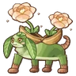

No.256
フロラヴェール
芽 幻
芽吹きの光をまとい、胸元に創生の花を咲かせる幻のパチモン。運営だけが初期メンバーとしてLv.70で迎えられる。通常の野生出現・一般配布はなく、進化せずLv.100まで成長する。
基本データ
| 図鑑番号 | No.256 |
|---|---|
| タイプ | 芽タイプ |
| 進化 | 進化しない |
| 入手方法 | 運営専用の幻のパチモン。一般の冒険で入手する方法はありません。 |
Lv.50の能力値
| HP | 510 | |
|---|---|---|
| 攻撃 | 350 | |
| 防御 | 310 | |
| 特攻 | 390 | |
| 特防 | 330 | |
| 素早さ | 310 | |
| 命中 | 110 | |
| 回避 | 105 |
冒険中の能力値はレベルに応じて上がります。オンライン対戦の通常レンタルはLv.50で統一されます。
覚える技
| 技 | タイプ | 分類 | 威力 | 命中 | PP | 効果 |
|---|---|---|---|---|---|---|
| 翠天の槍 | 芽 | 特殊 | 140 | 95 | 8 | 翠の光を一本の槍に束ねて放ち、相手の防御技による半減を貫く。芽・特殊・威力140・命中95・PP8。 |
| 万緑の冠 | 芽 | 強化 | — | — | 3 | 生命の葉冠でHP以外の7能力を1段階上げる（各最大6段階）。葉の結界で次に受ける一撃を半減する（貫通技を除く）。交代・戦闘不能・戦闘終了で解除。芽・PP3。 |
| 創生の花 | 芽 | 回復 | — | — | 5 | 胸元の花を開き、最大HPの65%（端数切り上げ）を回復する。最大HPが上限。芽・PP5。 PPを1消費する。 |
| 命樹の抱擁 | 芽 | 特殊 | 100 | 100 | 10 | 生命の根を光の蔓として伸ばし、与えたダメージの25%を吸収する。芽・特殊・威力100・命中100・PP10。 |
タイプ相性
芽タイプの技は潮タイプに強く（1.5倍）、灯タイプの技を受けると効果が大きくなります。同じタイプの技を使うと威力が1.15倍になります。